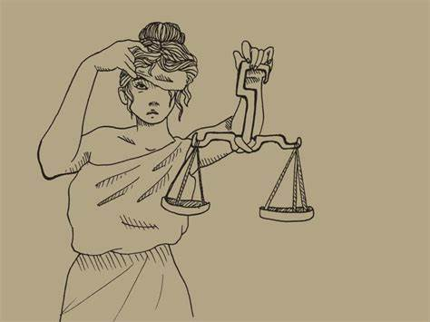

What is corruption?

Corruption is a complex and pervasive problem that can be found in almost every corner of the world. It is a term that refers to the misuse of power or authority for personal gain, typically involving financial or other forms of benefit. Corruption can take many different forms, and can range from small-scale bribery to large-scale embezzlement, fraud, and other criminal activities.
One of the most common forms of corruption is bribery, which involves offering or accepting money, gifts, or other benefits in exchange for a favorable outcome. For example, a government official might accept a bribe to issue a permit or grant a contract to a particular individual or company. This type of corruption can have far-reaching consequences, as it can undermine fair competition and lead to inefficient and ineffective use of resources.
Another form of corruption is embezzlement, which involves stealing money or other assets that have been entrusted to an individual or organization. This can occur in both the public and private sectors, and can be particularly damaging when it involves public funds that are intended for the benefit of the wider community. Embezzlement can also occur in non-profit organizations, where individuals may divert funds or resources intended for charitable purposes for their own personal gain.
Corruption can also take the form of fraud, which involves misrepresenting or concealing information in order to deceive others for personal gain. This can include accounting fraud, where individuals manipulate financial statements to mislead investors or regulators, as well as other types of fraud such as identity theft and insurance fraud.
The impact of corruption can be devastating, both for individuals and for society as a whole. Corruption can undermine economic growth, reduce public trust in government and other institutions, and exacerbate social inequality. It can also lead to increased poverty, as resources are diverted away from essential services and public goods such as education and healthcare.
Despite the widespread recognition of the harmful effects of corruption, it remains a persistent problem in many countries around the world. Addressing corruption requires a multi-faceted approach, including strong legal frameworks, effective enforcement mechanisms, and a commitment to transparency and accountability. It also requires a shift in cultural attitudes towards corruption, including a recognition of the ethical responsibilities that come with positions of power and authority.
In conclusion, corruption is a serious problem that has significant social and economic consequences. It can take many different forms, and can be found in both the public and private sectors. Addressing corruption requires a coordinated and sustained effort, including legal reforms, institutional strengthening, and a commitment to transparency and accountability. By working together to tackle corruption, we can create a more just and equitable society for all.
A history of corruption
Kazakhstan, a Central Asian country with a population of over 18 million people, has been grappling with corruption for decades. Despite the government's efforts to curb it, corruption has remained a persistent problem in the country's political and economic spheres.
The history of corruption in Kazakhstan can be traced back to the Soviet era, when the country was part of the Soviet Union. During this time, corruption was rampant, and the government officials and bureaucrats often used their positions of power to enrich themselves at the expense of the common people.
When Kazakhstan gained independence in 1991, corruption continued to be a major problem. The government officials and businessmen formed a close-knit group that controlled the country's resources and economic activities, giving rise to a system of crony capitalism. This system enabled a select few to accumulate wealth and power, while the majority of the population struggled to make ends meet.
One of the most notorious examples of corruption in Kazakhstan's history is the case of Mukhtar Ablyazov, a former banker and government minister. Ablyazov, who was once considered one of the country's richest men, was accused of embezzling billions of dollars from the bank he ran, as well as from other financial institutions. He fled the country in 2009 and was later arrested in France on charges of fraud and money laundering.
Another high-profile case of corruption in Kazakhstan is the Kazakhgate scandal, which involved allegations of bribery and corruption in connection with oil deals between Kazakhstan and various Western countries. The scandal, which came to light in the early 2000s, implicated several high-ranking officials and politicians in both Kazakhstan and the West.
Despite the government's efforts to combat corruption, including the establishment of an anti-corruption agency in 2014, corruption remains a pervasive problem in Kazakhstan. Transparency International's Corruption Perceptions Index ranks Kazakhstan 94th out of 180 countries, indicating that corruption is still a significant challenge for the country.
One of the reasons why corruption persists in Kazakhstan is the lack of transparency and accountability in the country's political and economic systems. The government has been criticized for its weak rule of law and lack of independent institutions to oversee and investigate corruption cases.
Another factor contributing to corruption in Kazakhstan is the country's dependence on natural resources, particularly oil and gas. The oil and gas industry is a major source of wealth for the country, but it has also been a breeding ground for corruption, with government officials and businessmen using their positions to secure lucrative contracts and kickbacks.
In conclusion, corruption has been a long-standing issue in Kazakhstan's history, and despite the government's efforts to combat it, it remains a significant challenge for the country. Addressing corruption will require significant reforms to the country's political and economic systems, including greater transparency and accountability, stronger rule of law, and the establishment of independent institutions to investigate and prosecute corruption cases.
Here are 10 ways to fight corruption
Corruption is a pervasive problem that affects societies and economies around the world. It undermines trust in public institutions, hinders economic development, and perpetuates social inequality. Fighting corruption requires a comprehensive approach that involves both prevention and enforcement measures. Here are ten ways to fight corruption:
1. Strengthen anti-corruption laws: Governments should enact and enforce strong anti-corruption laws that criminalize corrupt practices, establish clear ethical standards for public officials, and provide for the prosecution of corrupt individuals.
2. Promote transparency and accountability: Governments should promote transparency in decision-making processes, public procurement, and financial transactions. They should also create mechanisms for public oversight and hold public officials accountable for their actions.
3. Encourage citizen participation: Citizen participation in decision-making processes can help promote accountability and reduce opportunities for corruption. Governments should promote citizen engagement through public consultations, town hall meetings, and other mechanisms.
4. Enhance the role of the media: A free and independent media can play a crucial role in exposing corrupt practices and holding public officials accountable. Governments should promote media freedom and provide support for investigative journalism.
5. Strengthen anti-money laundering measures: Money laundering is often used to conceal the proceeds of corrupt activities. Governments should strengthen anti-money laundering measures and ensure that financial institutions and other regulated entities comply with these measures.
6. Provide protection for whistleblowers: Whistleblowers play a critical role in exposing corrupt practices. Governments should provide legal protections for whistleblowers and establish mechanisms for reporting corruption anonymously.
7. Empower civil society: Civil society organizations can play an important role in monitoring government activities and advocating for anti-corruption measures. Governments should provide support for civil society organizations and promote their engagement in anti-corruption efforts.
8. Build international cooperation: Corruption is a global problem that requires international cooperation. Governments should work together to promote anti-corruption measures, share information and best practices, and coordinate enforcement efforts.
9. Strengthen institutional capacity: Building institutional capacity is essential for effective anti-corruption efforts. Governments should invest in training and development programs for public officials, prosecutors, and judges.
10. Promote ethical business practices: Businesses can play a significant role in promoting anti-corruption efforts. Governments should encourage businesses to adopt ethical business practices, including transparency in financial transactions, compliance with anti-corruption laws, and a zero-tolerance policy for corruption.